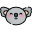

<mat-toolbar color='primary' class='angular-navbar'>
  <a routerLink=''>
    <button mat-stroked-button class='logo-button'></button>
  </a>
  
  <div *ngIf='!mobile'>
    <button mat-button routerLink='/geo'>Your Geolocation AQI</button>
    <button mat-button routerLink='/search'>Search for Cities</button>
    <button mat-button routerLink='/countries'>Search Countries</button>
    <button mat-button routerLink='/list'>Your Saved List</button>
  </div>
  
  <span class="fill-space"></span>

  <!-- Button for users who aren't logged in -->
  <div *ngIf='!mobile'>
    <a *ngIf='!auth.isAuthenticated()' (click)='auth.login()'>
      <button mat-stroked-button>
        Log In <i class="material-icons">chevron_right</i>
      </button>
    </a>
  
  <!-- Buttons for users who are logged in -->
    <a *ngIf='auth.isAuthenticated()' (click)='auth.logout()'>
      <button mat-stroked-button>Logout</button>
    </a>
  </div>

  <!-- Button to show menu when screen is small -->
  <button mat-button [matMenuTriggerFor]="menu" *ngIf='mobile'>
    <i class="material-icons">
      menu
    </i>
  </button>
  <mat-menu #menu="matMenu">
    <button mat-menu-item routerLink='/geo'>Your Geolocation AQI</button>
    <button mat-menu-item routerLink='/search'>Search for Cities</button>
    <button mat-menu-item routerLink='/countries'>Search Countries</button>
    <button mat-menu-item routerLink='/list'>Your Saved List</button>
    <button mat-menu-item *ngIf='!auth.isAuthenticated()' 
      (click)='auth.login()' class='auth-button'>Log In
    </button>
    <button mat-menu-item *ngIf='auth.isAuthenticated()' 
      (click)='auth.logout()' class='auth-button'>Log Out
    </button>
  </mat-menu>
  
</mat-toolbar>

<div class='container pad-content fill-page'>
  <router-outlet></router-outlet>
</div>

<footer class='footer'>
  <div class='container'>
    <div class='row'>
      <div class='col-4'>
        <div class='contact-button-container'>
          <button mat-stroked-button routerLink='/contact' class='footer-contact-button'>
            Contact
          </button>
        </div>
      </div>

      <div class='col-8'>
        <div class='icon-container'>
          <div class='fill-space'></div>
          <p class='icon-credit'>Icon made by 
            <a href="https://www.freepik.com/" title="Freepik" class='icon-credit-link'>Freepik</a> 
            from 
            <a href="https://www.flaticon.com/" title="Flaticon" class='icon-credit-link'>www.flaticon.com</a> 
            is licensed by 
            <a href="http://creativecommons.org/licenses/by/3.0/" title="Creative Commons BY 3.0" target="_blank"  class='icon-credit-link'>CC 3.0 BY</a>.
          </p>
        </div>
        
      </div>
    </div> 
  </div>
</footer>